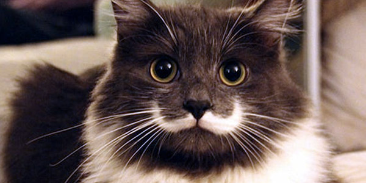

Todo Mascota
Todo lo que necesites sobre tu mascota lo hallarás aquí. Adentrate al mundo animal. Sorprendete con lo que la naturaleza nos tiene preparado. Entrar,descubre y diviertete.
Perros
Es un mamífero carnívoro de la familia de los cánidos, que constituye una subespecie del lobo (Canis lupus). Un estudio publicado por la revista Nature revela que, gracias al proceso de domesticación, el organismo del perro se ha adaptado a cierta clase de alimentos, en este caso el almidón. Su tamaño o talla, su forma y pelaje es muy diverso según la raza. Posee un oído y olfato muy desarrollados, siendo este último su principal órgano sensorial.
Gatos
Es una subespecie de mamífero carnívoro de la familia Felidae. El gato está en convivencia cercana al ser humano desde hace unos 9500 años,7 periodo superior al estimado anteriormente, que oscilaba entre 3500 y 8000 años. En las lenguas romances los nombres actuales más generalizados derivan del latín vulgar catus, palabra que aludía especialmente a los gatos salvajes en contraposición a los gatos domésticos que, en latín, eran llamados felis.
Aves
Las aves son animales vertebrados, de sangre caliente, que caminan, saltan o se mantienen solo sobre las extremidades posteriores, mientras que las extremidades anteriores están modificadas como alas que, al igual que muchas otras características anatómicas únicas que les permiten, en la mayoría de los casos, volar, pero no todas vuelan. Tienen el cuerpo recubierto de plumas y, las aves actuales, un pico córneo sin dientes.
Serpientes
Son un suborden de saurópsidos (reptiles) diápsidos pertenecientes al orden Squamata, superorden de los Lepidosaurios, caracterizado por la ausencia de patas (la pitón mantiene diminutas extremidades vestigiales, herencia de su pasado evolutivo) y el cuerpo muy alargado. Se originaron en el período Cretácico. Algunas realizan mordeduras venenosas, como las cobras y las víboras, para matar a sus presas antes de ingerirlas.
Arañas

Son el orden más numeroso de la clase Arachnida, lejanamente emparentadas con otros grupos de artrópodos, como los insectos, con los que no deben confundirse. El orden Araneae es el séptimo en diversidad total de especies respecto al resto de diversidad de organismos. El grupo está abundantemente representado en todos los continentes, excepto en la Antártida.
Animales Exóticos

Los animales exóticos son una alternativa a los animales de compañía más clásicos, como el perro o el gato. Un animal exótico tiene normalmente, como lugar de origen, el trópico. Un gran número de especies constituyen el extenso grupo de los animales exóticos. Cualquier clase de vertebrado puede ser considerada como animal exótico e incluso los animales exóticos abarcan a animales invertebrados.